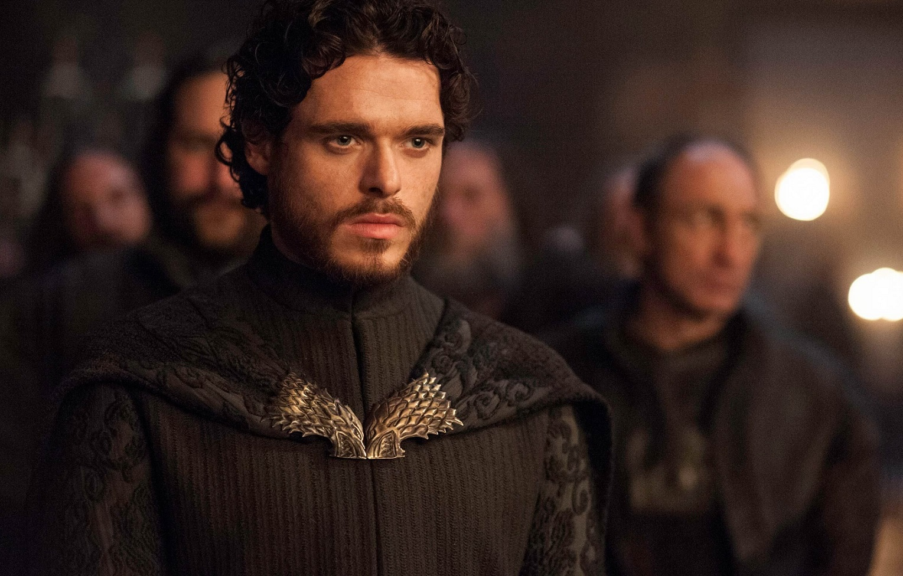

Robb Stark
Robb Stark é um dos personagens principais de Game of Thrones, conhecido por sua honra e coragem. Ele é o filho mais velho de Eddard Stark e Catelyn Stark, e herdeiro do Norte.
Origens e Família
Robb é o filho mais velho de Eddard Stark e Catelyn Stark, e herdeiro do Norte. Ele cresce em Winterfell, onde aprende a ser um líder e a defender seu povo.
Contribuições e Batalhas
Robb desempenha um papel crucial na luta contra os Lannisters e na tentativa de libertar seu pai, Eddard Stark. Ele é conhecido por sua habilidade em estratégia e tática, e por sua capacidade de influenciar as pessoas ao seu redor.
Legado
Exploração do impacto de Robb Stark na conclusão da série e seu legado em Westeros após o fim de Game of Thrones.